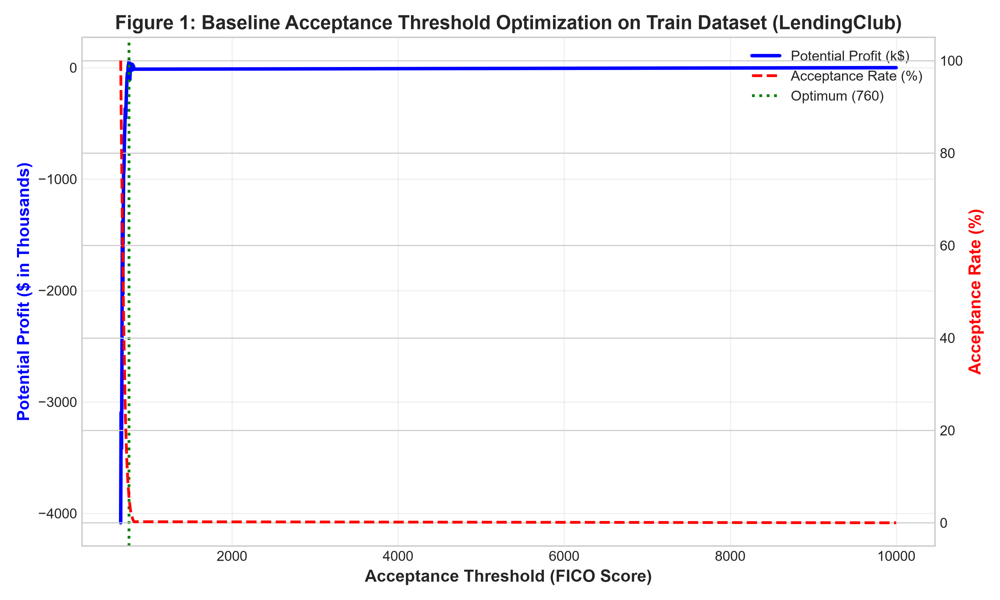
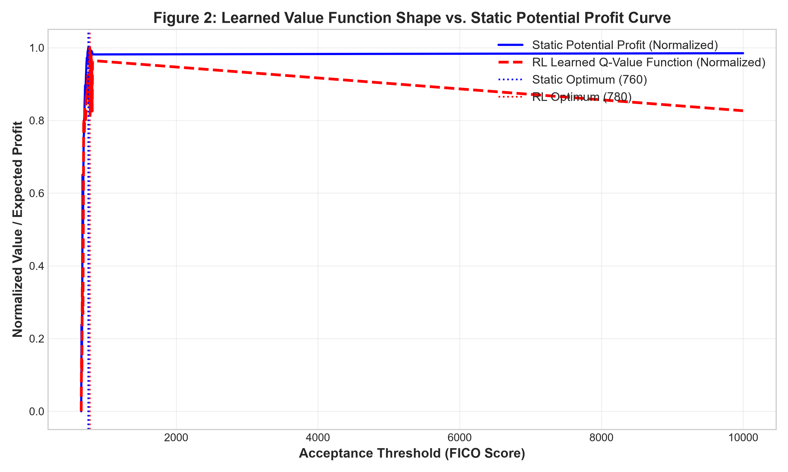
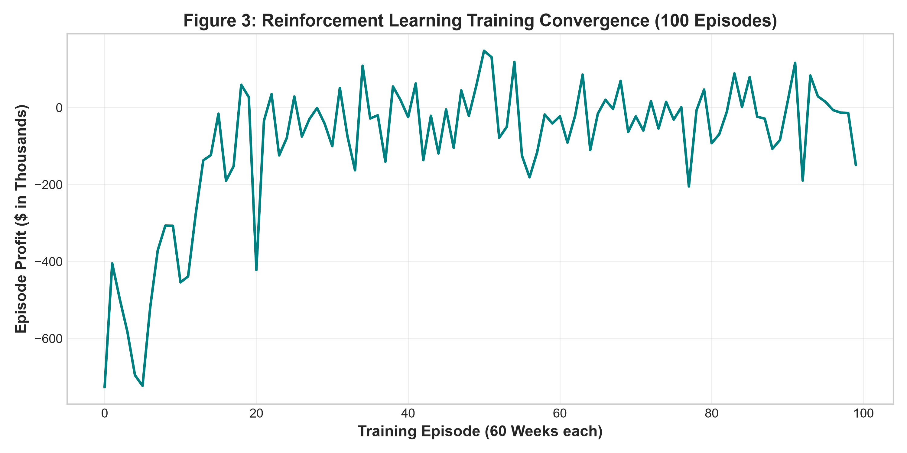
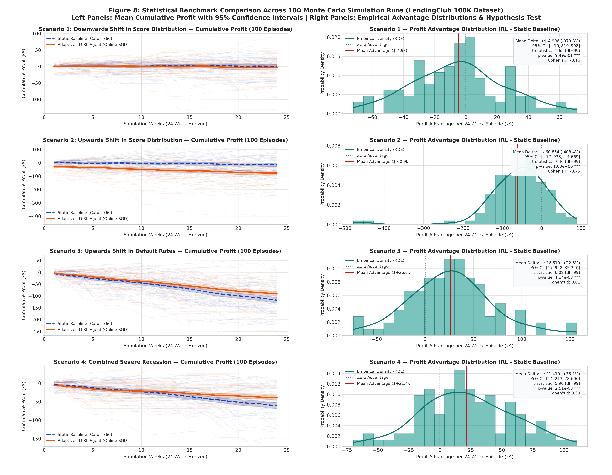
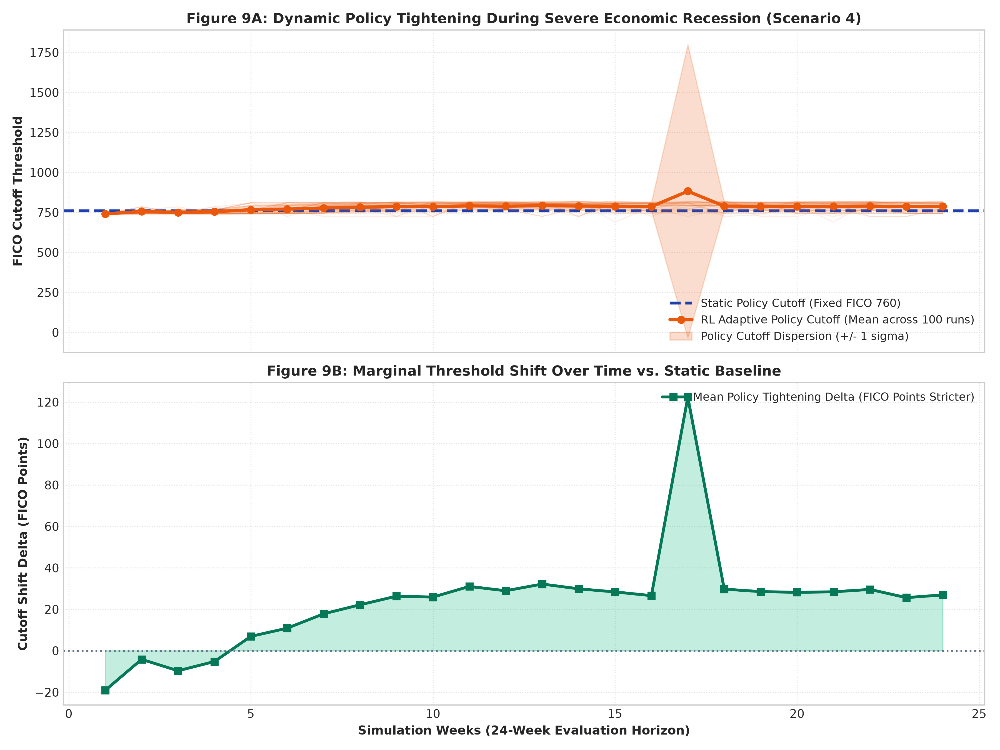
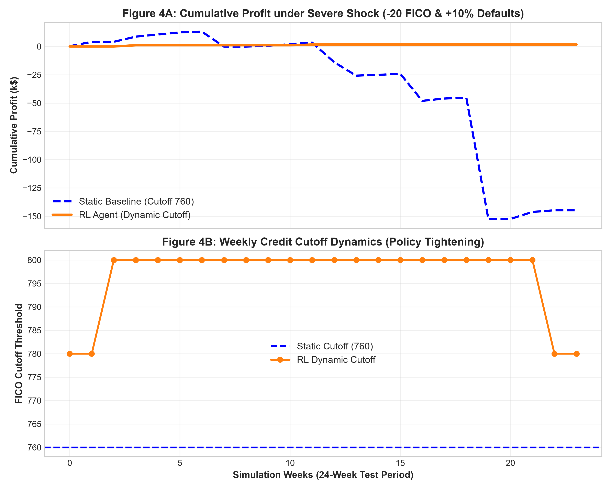

CreditQ continuously adapts credit acceptance thresholds to population drift and macroeconomic crisis shocks using a 4D state representation, Gaussian RBF value network, and dense counterfactual off-policy updates across all 34 actions — delivering verified capital preservation and resilient balance sheets.
| Scenario & Stress Condition | Static Cutoff (FICO 695) | v9.0 Dense RL Agent | Net Advantage (Δ) | Average RL Cutoff | Risk Policy Dynamics | Balance-Sheet Impact |
|---|---|---|---|---|---|---|
| Scenario 1: Clean Economy Control Zero macroeconomic drift / baseline economy |
$672,219 | $626,497 | -$45,722 (-6.8%) | FICO 685.9 | Active adaptation around 680–695 revenue peak | Normal Operation |
| Scenario 2: Population Drift -20 FICO downward borrower migration |
$435,997 | $636,472 | +$200,475 (+45.98%) | FICO 724.9 → 675 | Safely expands origination to capture solvent shifted borrowers | +46.0% Profit Surge |
| Scenario 3: Systemic Default Surge +10% default surge across all credit tiers |
-$819,404 | -$325,417 | +$493,987 (+60.29%) | FICO 983.2 / STOP | Swiftly ratchets past 815 and activates STOP_LENDING freeze | +$494k Capital Preserved |
| Scenario 4: Severe Crisis Shock -20 FICO & +10% default surge (Compound Recession) |
-$340,318 | -$207,893 | +$132,425 (+38.91%) | FICO 797.2 | Aggressively escalates into 760–800 protective defense | +38.9% Loss Reduction |






In the original paper, state was modeled as a 1D scalar \(S = [\text{acceptance\_rate}]\). On authentic data, this caused severe state aliasing: during population drift (-20 FICO), approval volume drops. The naive 1D agent misinterprets this as "policy is too strict" and mistakenly loosens cutoffs into toxic credit right when macro defaults are escalating.
We expanded the observation space with active-range scaling into \([0.0, 1.0]^4\):
RBFSampler(gamma=2.0).STOP_LENDING freeze action.